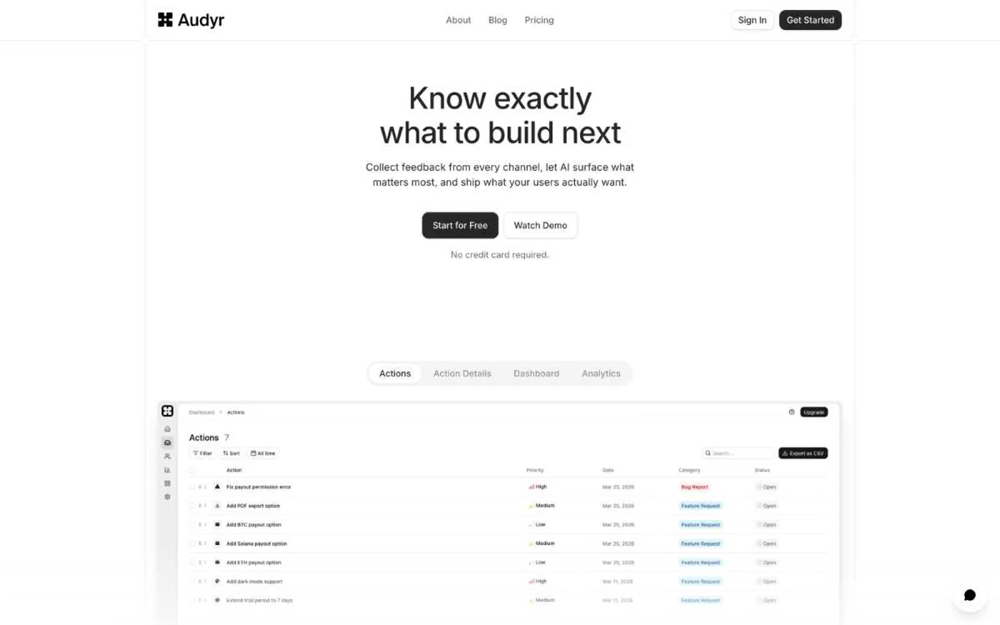

Audyr 的 Design.md 主题展示，围绕SaaS 产品、浅色界面、开发工具组织页面。
Explore Audyr's light SaaS design system: Ink #262626, Canvas White #ffffff colors, Inter typography, and DESIGN.md for AI agents.

#262626: #262626#686868: #686868#ffffff: #ffffff#515151: #515151#171717: #171717#929292: #929292#737373: #737373#22c55e: #22c55e#cbcbcb: #cbcbcb#155dfc: #155dfc#9810fa: #9810fa#00a63e: #00a63edisplay: Interbody: Intermono: ui-monospacehints: Inter,ui-monospace